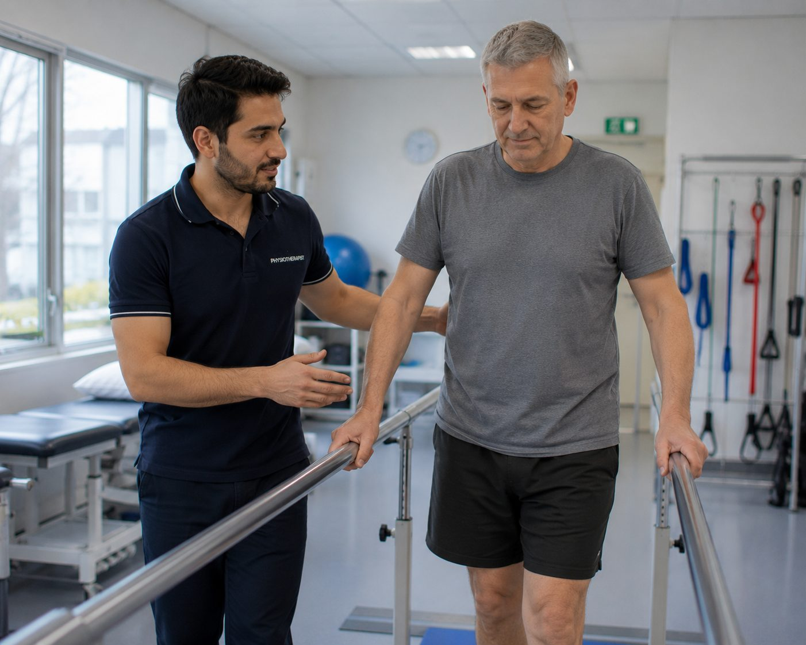

Career guide · Physiotherapy · New Zealand
Physiotherapy careers, redefined.
In a system that works differently.
RegistrationPhysiotherapy Board of New Zealand
PathwayAEWV, then residence pathways
Right nowSee current roles
Roles · New Zealand
Current opportunities
Roles we're recruiting for right now. If none is quite right, register your interest and we'll be in touch when something fits.
Essential
What actually matters, in five minutes
Seven questions that decide whether this move is worth exploring — answers first. The full detail sits one click below, and nothing has been removed.
Can I work there?Yes — three to six months, typically
You register with the Physiotherapy Board of New Zealand, which assesses your qualification, clinical experience and competency — clinical care, communication and professional practice — and then you hold an Annual Practising Certificate. For most internationally trained physiotherapists it is more straightforward than it first appears.
How registration works →What could I earn?Circa NZ$78,000–$118,000
Indicative, on the ten-step APEX Physiotherapy scale for public, community and rehab roles, current to 31 January 2027, with steps 1–7 rising automatically each year. Clinical lead and advanced practice sit on the designated scale, indicatively circa NZ$113,000–$154,000. Private and ACC-funded work is outside the agreements entirely.
How pay is set →Where are the jobs?Public, private and ACC-funded
Hospital, community and rehabilitation roles across the public system, plus a substantial private and ACC-funded MSK market. Demand is broad enough that where you live is usually your decision rather than the vacancy’s.
See current roles →What will the work be like?Direct access, not referral queues
The ACC scheme covers all injury-related care, so the funding is already in place before the patient reaches you. In practice: direct access instead of waiting on a referral, earlier intervention, greater clinical autonomy, a return-to-work focus — and far less time spent arguing for treatment.
The ACC model →Can I bring my family?Yes — most people do
Partners and children can usually join you on visas linked to yours, and partners can usually work. Schools, childcare and the family logistics are explained once, properly, in the family guide.
Family moves, explained →What will moving cost?Budget for real fees
Board registration and your first practising certificate, qualification verification, police clearance, visa fees for everyone moving, flights and shipping. Some employers contribute to relocation, some don’t — we get whatever is offered in writing.
The move, costed →How long could this take?Three to six months for registration
That is the Board’s typical range for an internationally qualified applicant, and the visa runs largely alongside it. Document verification and evidence of recent practice are the usual bottleneck, so start collecting them before you apply.
The journey, sequenced →Want the detail? Dig deeperWhy New Zealand, registration in full, scope of practice, the ACC model, a typical week, pay, life here, what we can’t promise and the FAQs — everything, one click down.

Why New Zealand
The scenery is the postcard. The work is why people stay
For physiotherapists, the real change is the way of working, and you notice it straight away.
- Smaller, more manageable caseloads
- Genuine clinical autonomy
- A system built around rehabilitation, not delay
Much of this rests on the ACC model. With funding in place for injury-related care, you can assess, treat and progress patients without the same barriers you may be used to.
"You're not fighting the system here. You're working with it."
Outside of work, the difference is just as clear: shorter commutes, the coast or the mountains within reach, and a culture where wellbeing is part of everyday life.
Physiotherapy at a glance
What to expect, in brief
A quick overview of physiotherapy in New Zealand: scope, registration, where you'll work, and what's in demand.
Scope of practice
Autonomous & broad
Autonomous assessment, diagnosis and management across MSK, neuro and rehabilitation settings.
Registration
Physiotherapy Board (PBNZ)
A structured pathway for internationally trained clinicians, typically three to six months.
Where you'll work
Hospital to private MSK
Hospital services, community and rehabilitation teams, and private musculoskeletal clinics nationwide.
Salary
NZ$78,000–$118,000
What physios are earning in the public system. Private and ACC-funded clinics sit outside that and vary with your caseload — we’ll talk real numbers for the roles you’re actually considering.
Demand
Strong & steady
Across community, private rehabilitation and MSK services, particularly for clinicians from comparable systems.
Work style
Varied settings
Public hospitals, private MSK clinics, community services, rehabilitation and aged care.
Opportunities vary with demand and location, but we're always happy to talk through what's available now and what could be a good fit for you.
Getting registered
Registration overview
Reviewed July 2026 · checked against the Physiotherapy Board of New Zealand’s current published guidance
To practise in New Zealand you'll register with the Physiotherapy Board of New Zealand. For most internationally trained physiotherapists the process takes around three to six months, and is more straightforward than it first appears.
The Board assesses your qualifications, clinical experience and overall competency against New Zealand standards, including clinical care, communication and professional practice. As part of the process you'll typically need:
- Verification of your qualification
- Evidence of recent clinical practice
- A police clearance
- Confirmation of English-language proficiency, if required
Once registered, you'll hold an Annual Practising Certificate (APC), which allows you to work legally. We support you through each stage, from understanding your pathway, to preparing your application, to securing the right role once you're registered.
Registration pathways
Your route depends on where you trained and how closely your experience aligns with New Zealand standards.
Internationally Qualified Pathway
The most common route for physiotherapists trained outside New Zealand. Your qualifications and experience are assessed against local standards, sometimes including additional assessment or a short period of supervised practice before fully independent work.
Express Pathway
For physiotherapists trained and practising in recognised comparable countries. More streamlined, though you'll still meet the Board's core competency requirements.
Everything in one place
Your registration resources, all on one page
Read the Board's own registration guide, work through our step-by-step checklist with application notes, then go straight to the people who register you. These cover registration only — visas and relocation are handled separately.
Registration application guideEthicare guideRegistration checklist & application notesEthicare guidePhysiotherapy Board of New ZealandOfficial registration website
Prefer a download? Registration guide (PDF) · Checklist (PDF)
Scope of practice
You begin with a broad, flexible foundation
Every physiotherapist in New Zealand, wherever they trained, begins under the General Scope of Practice. This isn't a limitation; it's a foundation.
It's broad and flexible, covering private practice, rehabilitation, hospital settings and community care, giving you space to establish yourself and build confidence in how things work locally. Most physiotherapists spend the majority of their careers within this scope, particularly in private and ACC-funded settings. In practice, that means managing your own caseload, making independent clinical decisions, and owning patient outcomes.
General ScopeWhere everyone begins
Broad, flexible practice across private, rehabilitation, hospital and community care, managing your own caseload with full clinical independence.
Advanced Practice PhysiotherapistHigher clinical responsibility
A higher level of clinical responsibility within a defined area: more complex cases, leadership responsibilities, and contributing to service development and mentoring.
Specialist PhysiotherapistThe highest level
The highest level of clinical practice: highly complex caseloads, expert input, and often contributing to education, research or service design within a field.
Progression is based on experience, further development and demonstrated capability within the New Zealand system.
The difference that shapes the work
The ACC system, and why it matters
ACC covers all injury-related care, so funding is already in place. For physios that means direct access instead of waiting on a referral, earlier intervention, and far less time spent arguing for treatment.
Direct access for patients
Earlier intervention
Greater clinical autonomy
A return-to-work focus
Funded, consistent caseloads
Less time fighting for approval
A typical week
What your day-to-day can look like
Your role varies by setting, but most physiotherapists enjoy a genuinely varied caseload and, in private practice and ACC-funded services, a high degree of autonomy in how they manage it.
- Assessing and treating a varied caseload across presentations
- Developing and managing individual, patient-centred treatment plans
- Supporting patients through rehabilitation and recovery milestones
- Collaborating closely with multidisciplinary teams
- Building long-term relationships with patients in the community
Salary & benefits
What you can expect to earn, and what comes with it
Public and community physiotherapy pay is set under the APEX Physiotherapy collective agreement — a transparent 10-step scale, with steps 1–7 rising automatically each year (current agreement runs to 31 January 2027). Private and ACC-funded work varies with caseload and experience. View the APEX agreement →
Public & community
NZ$78,000–$118,000
Health New Zealand hospital, community and rehab roles on the ten-step APEX scale, current to 31 January 2027.
Private practice
Set by the clinic
ACC-funded MSK and private practice sit outside the collective agreements entirely, so there is no scale to check a figure against. Earning potential grows with caseload and experience — we talk through real numbers for the specific role.
Designated & senior
NZ$113,000–$154,000
The designated-physiotherapist scale: clinical lead, advanced practice and specialist roles.
Beyond salary
- Annual leave: four weeks' paid leave is the legal minimum, and many roles offer more.
- Sick leave: paid sick-leave entitlements, with many employers offering above the minimum.
- KiwiSaver: New Zealand's workplace retirement scheme, with employer contributions on top of your pay.
- CPD support: funded continuing professional development is common, particularly in public and larger providers.
- Professional development: study leave, course funding and progression support where available.
We'll always be straight with you about pay and conditions for a specific role, including how the cost of living in that location compares.
Life beyond work
The page so far is about the work. This part is about the life.
For most people, the move is about more than a job. Here's an honest sense of what daily life can feel like, not a tourism brochure.
Work–life balance
Time that's actually yours
Manageable caseloads and a culture where finishing on time is normal, not exceptional.
Family life
Space to raise a family
Good schools, safe communities and the outdoors on the doorstep.
The outdoors
Coast and mountains, close
Beaches, bush and ski fields are often a short drive, part of everyday life, not just holidays.
Community
Welcoming and close-knit
Smaller communities make it easier to settle in and feel part of something.
Commuting
Shorter, calmer journeys
Outside Auckland especially, commutes are typically short: minutes, not hours.
Everyday life
A steadier pace
A calmer rhythm to the week, with more room for the things that matter.
From experience
What physiotherapists actually tell us
A few honest themes that come up again and again, from the people who've made this move.
What surprises them most
How much clinical autonomy they have, how quickly they're trusted, and how manageable the caseloads feel compared with what they left behind.
Common concerns before moving
Whether their experience will be recognised, how registration really works, and how the family will settle. Almost always, these ease once there's a clear plan.
What they say afterwards
That the adjustment was shorter than expected, the lifestyle change was real, and the main regret was not doing it sooner.

Ethicare insight
Most physiotherapists we speak to are unsure at first how their experience will translate. In reality, the transition is usually very smooth: the standard of physiotherapy in the UK and similar systems aligns closely with New Zealand. The differences are mostly in how the system is structured, not how you practise.
There's often a short adjustment at the start. For some it can feel like a small step back, but it's really just about building confidence in a new system and getting familiar with ACC. That phase is usually brief, and physiotherapists tend to progress quickly into highly autonomous work.
SophieCEO & Founder, Ethicare Resourcing
The honest bit
What we can’t promise
A move this size deserves the limits as well as the pitch. Three things you’ll never hear us guarantee — and what we do instead.
Timelines that aren’t ours to give
Registration sits with the Physiotherapy Board and visas with Immigration New Zealand. We’ll give you the realistic range, keep your file complete and moving, and chase what can be chased — but we won’t quote a faster number just to win you over.
A specific job in a specific suburb
Vacancies move. If your heart is set on one workplace in one corner of one city, we’ll tell you honestly how long that wait could be — before you resign anything, not after.
That the move is right for you
Some moves shouldn’t happen. If the scope, the pay maths or the family logistics don’t stack up, we’ll say so plainly. We’d rather lose a placement than see you land in the wrong life.
The rest of the move
Everything that isn’t about your profession
Visas, how the countries compare, where in the country to live, and the eight stages from first conversation to first shift. We cover each of those once, properly, rather than repeating them on every role page.
Common questions
Frequently asked
Private and ACC clinics, or the public system — which should I be looking at?
This is the real decision, and it matters more than most people expect. Private and ACC-funded clinics give you the most autonomy soonest: your own caseload, mostly musculoskeletal, direct access, and earnings that move with how busy you are. Health New Zealand roles give you complexity and structure instead — inpatient and community rehabilitation, neurology, respiratory, older persons' health, paediatrics, rotations, and a clearer ladder with funded development alongside it.
Plenty of physiotherapists do both over a career, and moving between them later is normal. Tell us how you like to work and what you want to be good at in five years, and we'll be straight with you about which fits.
Do I need to be an ACC provider myself?
Not as an employee. Clinics hold the ACC contract and you treat under it, so the billing and reporting sit with the practice rather than with you personally. What does land on you is the documentation: injury claims, treatment rationale and progress reporting are part of the working day, and they are how funded treatment gets approved and continued.
It is straightforward once you have seen it a few times, and any decent clinic will walk you through their systems in your first fortnight. If you ever go on to run your own practice, becoming a contracted provider is a separate step and we can point you at the right people.
I've specialised in neuro, respiratory or paediatrics rather than MSK. Is there work for me?
Yes — but be realistic about where it sits. Specialist non-musculoskeletal work is concentrated in hospital services and the main centres, so if neurological rehabilitation or paediatrics is what you want to keep doing, your location options narrow. There is genuine demand, and specialist experience is valued; there are simply fewer posts and they turn over less often.
Provincially, the volume is musculoskeletal and ACC-funded. Many people arriving with a specialist background take a broader role first, then move back towards their area once they know the system and the people. Say early on that your specialty is non-negotiable if it is — it changes which roles we put in front of you, and we'd rather know now.
Will my current banding or seniority carry across to the pay scale?
Relevant experience is normally recognised, but it is not a direct band-to-step conversion. Public and community roles sit on the APEX physiotherapy scale, and where you start on it is assessed by the employer against your experience and the agreement's own criteria — not by mapping an overseas grade onto a New Zealand one. Private and ACC clinics work differently again, with earnings shaped by caseload as much as by starting rate.
Our job is to get your starting point confirmed in writing before you accept anything, alongside what that actually means in the town you'd be living in. We won't guess at a number to make a role sound better than it is.
How different is the way physiotherapy is actually practised?
The clinical knowledge transfers almost entirely. What tends to shift is emphasis. Practice here leans strongly towards active rehabilitation, education and self-management — getting people moving, understanding their injury and taking the work home with them — rather than long courses of passive treatment. If you come from a hands-on tradition, expect to use those skills as part of a plan rather than as the plan.
Cultural safety is also treated as core clinical practice, not an add-on. Understanding Te Tiriti o Waitangi and how it shapes health care, and working respectfully with Māori and Pacific patients and their whānau, is part of what the Board expects of you and part of what makes you good here. Nobody expects fluency on day one; they do expect you to take it seriously.
Can I locum, work part-time, or split my week between clinics?
Part-time is common and generally straightforward to arrange. Locum and multi-clinic work is more complicated at first, and the reason is the visa rather than the profession: an Accredited Employer Work Visa ties you to one accredited employer and a specific role, so stitching together shifts across several practices usually isn't possible until you have residence.
Once you're a resident, the flexibility opens right up and a lot of physiotherapists do build a mixed week. If flexibility is the whole point of the move for you, tell us at the start — it shapes which visa route and which employers make sense.
Nau mai, haere mai · If you’re weighing it up
We'll be with you throughout
Relocating to a new country can feel overwhelming at times, and you won't be doing it on your own. Tell us where you trained and what you're weighing up, and we'll help you think it through.
Ethicare Resourcing · your guide to a life and career in New Zealand.